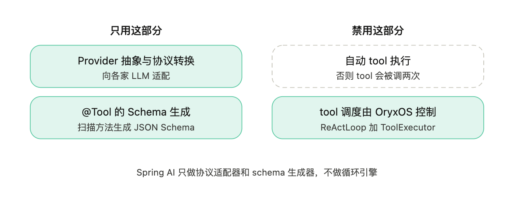
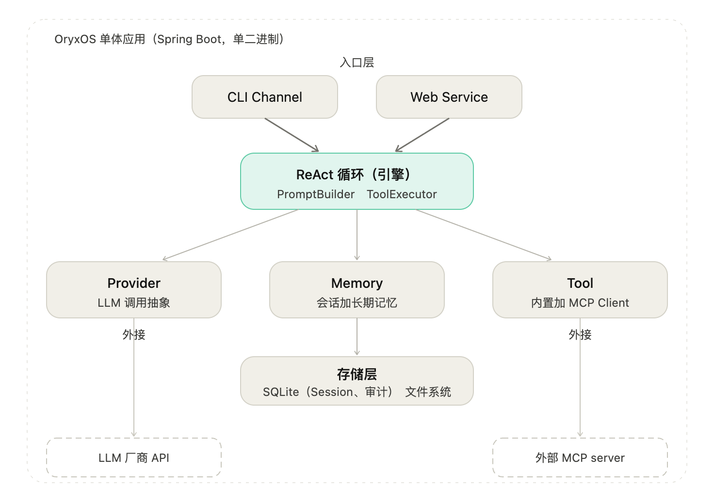
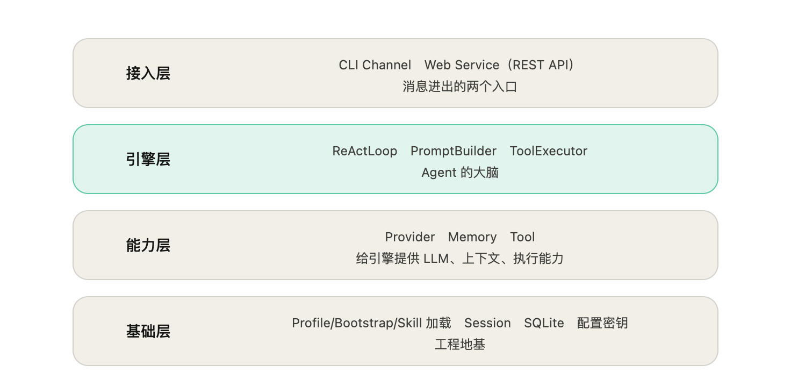
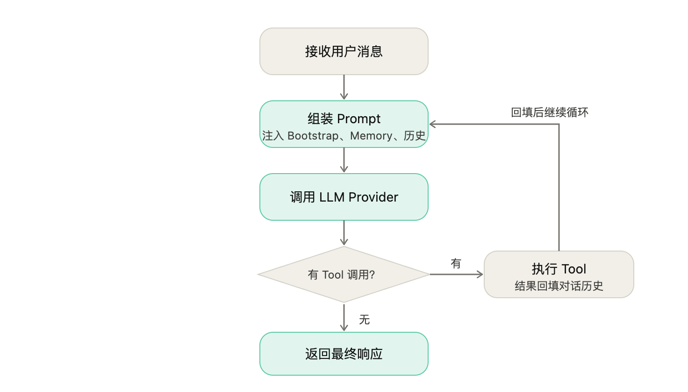
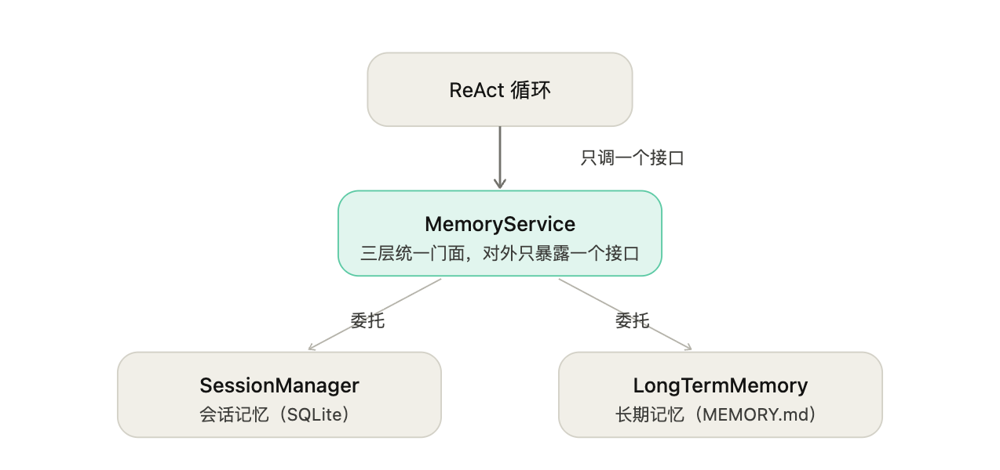
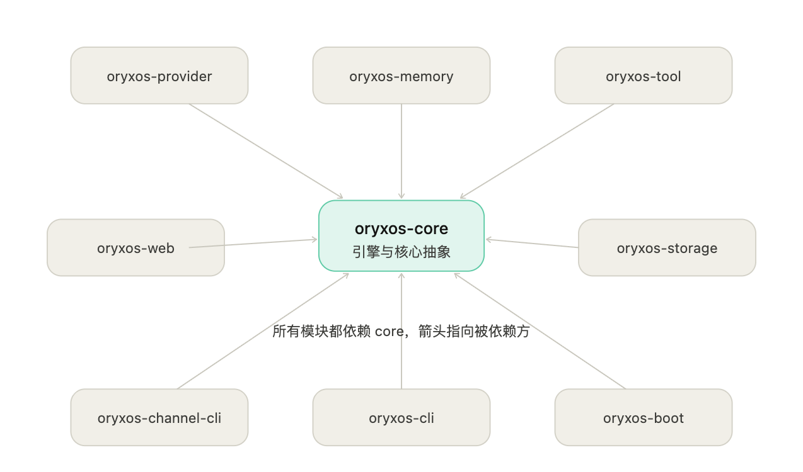

本文档定义 OryxOS 的技术方案，回答 How 的问题。前置阅读《项目篇 OryxOS 业界调研》和《OryxOS 需求文档》。本文档以需求文档定义的五大核心能力（对接 LLM、ReAct 循环、Memory 记忆、Plugin Tool、Web Service）为骨架展开，每个模块只给职责和功能说明，不展开代码细节。代码层面的实现细节在研发阶段补充。
承接需求文档的定位判断：核心阶段交付的是 Agent OS 的运行时内核，能力上对齐业界开源 Agent OS 的基础层；让 OryxOS 成为真正企业级 Agent OS 的治理层（多租户、SSO、完整审计、Tool 治理）在扩展和社区阶段补齐。本技术方案只覆盖核心阶段的运行时内核，并在架构上为治理层预留扩展点。
OryxOS 是一个 Spring Boot 3.x 单体应用，跑在 JDK 21 上，基于 Spring AI Alibaba 做 LLM 调用，自己实现 ReAct loop 作为 Agent 核心。整个 OryxOS 是一个可执行 JAR，单二进制部署，扩展阶段引入 GraalVM Native Image 进一步压缩启动时间和内存占用。
技术栈选型一句话总结：JDK 21 + Spring Boot 3.x + Spring AI Alibaba + 自实现 ReAct loop + SQLite + Picocli 命令行。
需求文档定义了五大核心能力，下面统一列出 7 个关键决策的取舍。先用一张表速览，再逐条展开。
| 决策 | 选择 | 一句话理由 |
|---|---|---|
| 一 ReAct 循环 | 自己实现，不用 Spring AI 的 Agent 抽象 | Agent 核心完全可控 |
| 二 Spring AI 边界 | 只用协议转换和 schema 生成，禁用自动 tool 执行 | 否则 tool 被调两次 |
| 三 执行模型 | 同步阻塞加 virtual thread | 代码直观又能扛并发 |
| 四 Tool 注册 | @Tool 注解加 OryxTool 抽象层 | ReAct 不感知 Tool 来源 |
| 五 HTTP 层 | Spring MVC 加 virtual thread | 单机撑几千并发 |
| 六 Sandbox | Path/Pattern 白名单，不用 SecurityManager | SecurityManager 在 JDK 21 已不可用 |
| 七 持久化 | SQLite 加 MEMORY.md，审计表 day one 落库 | 可审计地基从一开始立起来 |
决策一：自己实现 ReAct loop。 Spring AI 负责 LLM 调用、Function Calling 的协议格式转换、Provider 抽象这些底层工作，ReAct loop 自己写，保证 Agent 核心完全可控，也保留未来定制循环行为的空间。
决策二：明确划清 Spring AI 的使用边界。 这是最容易埋 bug 的地方，单列为一条决策。Spring AI 自身带有一套完整的 tool calling 自动执行机制（能自动执行 tool 再把结果回灌给模型）。

OryxOS 不使用这套自动执行，只用 Spring AI 的两件事：
一是 Provider 抽象和向各家 LLM 的协议转换，
二是 @Tool 注解的 JSON Schema 生成。
Tool 的实际调度和执行完全由 OryxOS 自己的 ReActLoop 加 ToolExecutor 控制。换句话说，Spring AI 在 OryxOS 里只做协议适配器和 schema 生成器，不做循环引擎。研发时必须禁用 Spring AI 的自动 tool 执行，否则会出现 tool 被调两次的问题。
决策三：同步执行模型。 核心阶段采用同步阻塞执行模型，跟 Spring MVC 一致。一次消息从进来、ReAct loop 执行、Tool 调用、Provider 调用到最终响应返回，全程同步。这跟 Java 21 的 virtual thread 配合得很好，单节点支撑高并发不需要响应式编程。扩展阶段引入流式输出（SSE）和异步 Tool 调用。
决策四：Tool 注册机制用 @Tool 注解加 OryxTool 抽象层。 Spring AI 注解负责扫描 Java 方法生成 JSON Schema，OryxOS 在其上加一层 OryxTool 抽象，统一内置 Tool 和 MCP Tool 的接口形式，让 ReAct loop 不感知 Tool 来源。注解的确切名称和用法以采用的 Spring AI 版本为准，研发前需对当前版本核实。
决策五：HTTP 服务层用 Spring MVC 加 Java 21 virtual thread。 同步直观的代码加 virtual thread 的高并发能力，单机轻松撑住几千并发。扩展阶段要 SSE 流式返回时，Spring MVC 的 SseEmitter 也能支持。
决策六：Sandbox 策略用 Path 和 Pattern 白名单。 文件操作限制工作目录、Shell 命令白名单、HTTP 域名白名单，在应用层做校验。不使用 Java SecurityManager，它在 JDK 17 起已废弃、JDK 21 已不可用，与本项目 JDK 21+ 要求冲突。扩展阶段引入子进程加 bwrap 或 Docker 做完整 sandbox 隔离。
决策七：持久化用 SQLite 加 Spring Data JPA，Memory 长期记忆用 MEMORY.md 文件加关键词检索。 Profile YAML 放 .oryxos/profiles/，Session、Tool Invocation、LLM Call 落 SQLite。其中审计相关的 tool_invocations 和 llm_calls 两张表在核心阶段就做写入（不做查询接口），让可审计这个差异化能力的数据地基在 day one 就立起来，避免后期从日志反解析返工。完整的向量检索方案在扩展阶段升级（详见第 8 章）。
OryxOS 的完整技术栈：
JDK 21 加 Spring Boot 3.x（virtual thread 处理高并发）
Spring AI 加 Spring AI Alibaba（LLM Provider 抽象，复用现成的主流 LLM connector）
自实现 ReAct loop（Agent 核心循环）
Spring MVC（HTTP API 服务层）
Picocli（命令行工具）
SnakeYAML（Profile YAML 解析）
SQLite 加 Spring Data JPA（Session、审计和元数据持久化）
MCP Java SDK（MCP Client 集成，社区项目，可能需要部分自实现）
Logback 加 SLF4J（结构化日志）
Micrometer 加 Prometheus（指标采集，扩展阶段）。
OryxOS 的整体架构按"五大核心能力加支撑模块"组织。五大核心能力是 Agent OS 运行时内核的主体，支撑模块是让这些能力跑起来需要的工程基础设施。

整体上，OryxOS 是一个 Spring Boot 单体应用，对外只有两个入口：
CLI Channel 用于本地交互和调试，Web Service 用于业务系统通过 REST API 集成，两个入口的消息最终都汇入同一个引擎。
引擎是 ReAct 循环，它是整个系统的中枢，负责把"接收消息、组装 Prompt、调用 LLM、执行 Tool、回填结果、继续推理"这条链路驱动起来。引擎自己不直接干活，而是调度三块能力：
Provider 负责 LLM 调用并向外对接各家大模型 API
Memory 负责会话和长期记忆并读写本地文件
Tool 负责工具执行并通过 MCP Client 向外对接外部 MCP server。
这三块能力之下是存储层，Session 和审计数据落 SQLite，Profile、Bootstrap、Memory、Skill 这些用户可维护的数据落文件系统。
这个架构有两个要点。
第一，所有能力收敛到一个引擎、一套存储、一个进程内，符合"单二进制、装好就跑"的定位，外部依赖（LLM 厂商 API、外部 MCP server）都在应用边界之外，OryxOS 自身不绑定任何一家。
第二，引擎和能力之间、能力和外部之间都通过抽象接口解耦，这让扩展阶段加新 Channel、新 Provider、新 Tool 时只需在边缘扩展，不动核心引擎。下面分层和按能力两个视角分别展开。
从上到下分四层。

最上是接入层（CLI Channel、Web Service 的 REST API），负责消息进出。
中间是引擎层（ReActLoop、PromptBuilder、ToolExecutor），是 Agent 的大脑。
再下是能力层（Provider、Memory、Tool），给引擎提供 LLM 调用、上下文、执行能力。
最底是基础层（Profile/Bootstrap/Skill 加载、Session 存储、SQLite、配置与密钥加载），是工程地基。
五大能力不是平行的功能模块，它们之间有明确的协作关系。
ReAct 循环（能力二）是引擎，负责把"用户消息到 LLM 思考到 Tool 执行到结果回填到继续"这件事跑起来。
Provider（能力一）给 ReAct 循环提供 LLM 调用能力，每轮思考都要调一次。
Memory（能力三）给 ReAct 循环提供上下文，每轮组装 prompt 时把会话历史和长期记忆注入进去。
Tool（能力四）给 ReAct 循环提供执行能力，LLM 决定调哪个 Tool 后由 ReAct 循环负责执行。
Web Service（能力五）是这套内部能力的对外出口，把前四个能力包装成 REST API 供业务系统集成，它不参与 Agent 内部循环，而是循环的触发入口和结果出口之一（另一个入口是 CLI Channel）。
简化成一句话：Provider、Memory、Tool 三个能力供养 ReAct 循环这个引擎，引擎跑出的能力通过 CLI 和 Web Service 两个入口对外提供。
LLM 调用的复杂度都被 Spring AI Alibaba 吸收掉了。OryxOS 在其上做一层薄包装，把 Spring AI 的 ChatClient 转成 OryxOS 内部的 ProviderService 抽象。
ProviderService 模块。职责是统一管理所有 LLM Provider，对 ReAct 循环屏蔽不同 LLM 厂商的差异。ReAct 循环调 LLM 时传入 Profile 和 Prompt，ProviderService 按 Profile 配置选对应的底层 ChatModel 完成调用。
Function Calling 适配模块。职责是把 OryxOS 内部的 OryxTool 抽象转成 Spring AI 的工具调用格式。Spring AI 已经做好了向各家 LLM 协议的转换（OpenAI tools、Anthropic tools、Gemini function declarations），OryxOS 不需要关心每家协议的差异。注意这里只用 Spring AI 的格式转换，不用它的自动执行（见决策二）。
Provider 配置模块。通过 application.yaml 配置 Provider 的 API key 环境变量引用和 base URL，Spring AI Alibaba 根据配置创建对应的 ChatModel Bean。
这是一个需要讲清楚的关键点。Spring AI Alibaba 配多个 Provider 时，Spring 容器里会有多个 ChatModel Bean。仅靠"扫描容器里所有 ChatModel"无法可靠区分哪个是 deepseek、哪个是 kimi，因为 Bean 类型相同、Bean name 未必等于 provider name。
OryxOS 的做法是维护一份显式的 provider name 到 ChatModel 的映射，而不是靠类型扫描自动来。
具体是在 Provider 配置里为每个 Provider 声明唯一的 provider name（deepseek、qwen、kimi 等），ProviderService 启动时按这个 name 建立映射表，Profile 通过 provider name 引用。这样多 Provider 并存时不会有歧义。映射的具体实现方式（用 Spring 的 Qualifier、还是自己维护配置表）在研发阶段定，但"显式映射、不靠类型扫描"这个原则要守住，否则多 Provider 跑不起来。
核心阶段不做 fallback 和 hedge racing。Provider 故障时直接报错给 Agent。fallback 链路、circuit breaker、hedge racing 放扩展阶段，通过 Profile 的 fallback 字段声明备用 Provider。
成本透明在核心阶段做基础版。每次 LLM 调用记录 token 使用量、Provider、模型，写入 llm_calls 表（见第 8 章）。扩展阶段做完整的成本聚合和 Web 看板。
ReAct 循环是 OryxOS 最核心的一段代码。输入一条用户消息，输出 Agent 的最终响应，中间可能调用若干次 LLM 和若干次 Tool。

ReAct 是 Reason 加 Act 的简称。算法步骤：
接到用户消息追加到 Session 对话历史；
组装 Prompt（system prompt 加 Bootstrap 加 Skill 加 Memory 加对话历史加可用 Tool 列表）；
调用 LLM Provider 获取响应；
如果响应没有 Tool 调用，返回最终响应；
如果有 Tool 调用，OryxOS 执行 Tool 并把结果作为 tool 消息追加到对话历史；
回到组装 Prompt 步骤继续循环；
达到最大迭代次数（默认 10 次）强制结束。
ReActLoop 模块。Agent 的核心循环引擎。输入 Session 和用户消息，输出最终响应。
内部维护当前迭代次数，调用 ProviderService 调 LLM，调用 ToolExecutor 执行 Tool，把每轮的响应和工具结果累积到 Session 对话历史。核心循环逻辑精简，约数十行 Java，不依赖 Spring AI 的 Agent 抽象，让实现者完整掌握 Agent 的工作机制。
PromptBuilder 模块。组装每轮 LLM 调用的 Prompt。按四部分顺序拼接：
第一部分 system prompt（Profile 的 identity prompt 加 Bootstrap 文件加 Skill 文件内容，统一由下面讲的 ContextLoader 提供）；
第二部分 Memory 注入（会话历史加长期记忆，由 MemoryService 提供）；
第三部分对话历史（按 maxHistoryTurns 截断后的 Session messages）；
第四部分当前 Profile 可用的 Tool 列表（按 Function Calling 格式）。
ToolExecutor 模块。执行 LLM 返回的 Tool 调用请求。从 ToolRegistry 找到对应 Tool，做 Sandbox 检查，执行 Tool，把结果包装成 ToolResult 返回给 ReAct 循环，并写入 tool_invocations 表。失败时按可重试策略返回错误信息。
MAX_ITERATIONS 限制。核心阶段默认 10 次，防止 Agent 陷入 Tool 调用死循环，可在 Profile 里覆盖。
消息累积。每次迭代都把 LLM 响应和 Tool 结果追加到 Session 的 messages 列表。这意味着 Session 的对话历史包含完整的 LLM 调用链和 Tool 调用链，对外可查可审计。
上下文长度管理。核心阶段策略简单：保留 system prompt 和最近 N 轮对话，超出部分丢弃，N 由 Profile 配置默认 20 轮。扩展阶段引入总结压缩。
核心阶段不做：Tool 调用并行（一次响应里多个 Tool 调用按顺序执行）、Agent 间任务委托、流式响应。这些放扩展阶段。
Memory 是 Agent OS 区别于普通 chatbot 的核心能力。三层记忆是完整设计，核心阶段做会话和长期两层，情景记忆放扩展。

这里做一个相对原方案的架构调整：Memory 做成三层记忆的统一门面，对 ReAct 循环只暴露一个 MemoryService 接口，内部再分会话记忆和长期记忆。这样对外叙述的"三层记忆"和内部实现一致，ReAct 循环不需要分别去问 Session 和 MEMORY.md 两个地方。
MemoryService 模块（统一门面）。对 ReAct 循环暴露统一的记忆读写接口。内部把会话记忆委托给 SessionManager（底层是 SQLite 的 Session 存储），把长期记忆委托给 LongTermMemory（底层是 MEMORY.md 文件）。ReAct 循环组装 prompt 时只调 MemoryService 一个接口拿到完整上下文。这是相对原设计的关键调整，避免 Memory 概念横跨两个模块却没有统一入口。
LongTermMemory 子模块。长期记忆的核心读写，底层操作 .oryxos/memory/MEMORY.md 一个 Markdown 文件。对外提供四个方法：append（追加内容，自动加日期 header）、load（加载整个文件，超阈值截断）、recallByKeyword（按关键词检索返回匹配行）、truncateIfNeeded（超过 4000 字保留最近内容）。接口预留向量检索升级空间：recallByKeyword 设计成可升级为 recall（带 mode 参数支持 keyword 加 semantic），切换底层实现不影响上层。
MemoryTools 子模块。把长期记忆暴露给 Agent 调用，包含 save_memory 和 recall_memory 两个内置 Tool，标注 @Tool 注解自动注册到 ToolRegistry，跟其他内置 Tool 一视同仁。
会话记忆。由 SessionManager 实现（见第 8 章），通过 SQLite 持久化，按独立 session_id 管理；Channel、用户和 Profile 记录归属，同一组合允许多个独立会话。MemoryService 把它作为三层之一统一对外。
文件位置 .oryxos/memory/MEMORY.md，同一工作区的多个 Profile 共用，首版不提供用户或 Agent 的长期记忆隔离，仅适用于个人或同一可信工作区。内容是简单的 markdown 列表，每条记忆带日期 header。格式不规定严格，Agent 写什么 LLM 自己理解就行，简单但有效。
ReAct 循环每次组装 prompt 时，MemoryService 把会话历史和整个 MEMORY.md 内容提供给 PromptBuilder。长期记忆每次重新读不做缓存，这样 Agent 调用 save_memory 后下一轮立刻能看到，每次读一个小文件性能可接受。扩展阶段加 in-memory cache 加文件 watch 自动失效。
需求文档 Bootstrap 文件有 USER.md，跟 MEMORY.md 角色容易混淆，明确区分：
USER.md 是 Bootstrap 文件，由用户手写、OryxOS 只读不写，是用户的"初始设定"；
MEMORY.md 是长期记忆，由 Agent 通过 save_memory 写入、OryxOS 读写，是 Agent 的"成长记录"。
两者都进 system prompt，但来源和生命周期不同。
自动抽取（由 LLM 自己决定何时调 save_memory，不自动从对话提取）、语义检索（recall 用关键词不引入向量库）、情景记忆（放扩展）、Memory Wiki（结构化 claim/evidence、矛盾检测）、压缩（超长简单截断）。
Tool 是 Agent 可以调用的外部能力。OryxOS 的 Tool 分两类：内置 Tool 由 OryxOS 提供，Plugin Tool 由业务方扩展。Plugin Tool 有三种接入方式，按门槛从低到高排。
这里做一个相对原方案的模块调整说明：核心阶段 Tool 相关合并为一个 oryxos-tool 模块（内置 Tool、MCP Client、ToolRegistry、Sandbox 都在里面），不拆成 builtin/skill/mcp 三个模块。原因是它们共享同一个 OryxTool 抽象和 ToolRegistry，耦合度高，核心阶段没必要拆细。
另外，SKILL.md 严格说不是一种 Tool，而是注入 system prompt 的指令模板，因此 SkillLoader 不放在 Tool 体系里，归到上下文加载那一层（见 8.3），跟 Bootstrap 文件一类。这样概念更齐整。
OryxOS 内部统一的 Tool 抽象接口。内置 Tool、@Tool 注解的 Plugin Tool、MCP Tool 都被包装成 OryxTool 实例注册到 ToolRegistry，ReAct 循环不感知具体 Tool 的来源。
OryxTool 接口约定四个核心方法：getName、getDescription、getInputSchema（JSON Schema）、execute（接收 JSON 输入返回 ToolResult）。ToolResult 包含成功标识、结果内容、错误信息、是否可重试。
核心阶段提供五个内置 Tool，分三组。FileTools：read_file、write_file、list_dir，执行前调 SandboxChecker 做路径白名单检查。
ShellTools：shell Tool 执行 bash 命令，带超时和命令白名单。
HttpTools：http_get、http_post，带域名白名单。
加上 MemoryTools 的 save_memory、recall_memory（归 Memory 模块，但作为内置 Tool 注册）。
这五个覆盖"让 Agent 能读写文件、跑命令、调外部 API、记事"的最短链路。
OryxOS 主推的接入方式。业务方不写代码，只写一份 markdown 描述要做的事，LLM 自己理解任务、自己组合调用 MCP 工具。
SKILL.md 是一份带 frontmatter（name、description、trigger、required_tools）加任务说明正文的 markdown 文件。Profile 通过 skills 字段引用它，通过 mcp_servers 字段引用需要的 MCP server。
OryxOS 把 SKILL.md 内容加载进 system prompt，LLM 读到后自己理解任务、自己决定调哪个 MCP 工具、自己组合完成。OryxOS 不解析任务步骤、不做工作流引擎，所有逻辑交给 LLM。
注意 SKILL.md 的加载由 ContextLoader（8.3）负责，不在 Tool 模块里。它本质是 prompt 的输入源，跟 Bootstrap 文件同类。
业务方用任何语言写 MCP server，通过 MCP 协议暴露工具，OryxOS 作为 MCP Client 连接进来。MCP server 配置在 .oryxos/mcp_servers.yaml，声明 name、transport、command、env。
McpClientService 子模块。MCP server 的连接维护和工具注册。OryxOS 启动时连接所有配置的 MCP server，调 tools/list 拿工具列表，把每个 MCP 工具包装成 OryxTool 注册到 ToolRegistry，处理 server 失联、超时、错误恢复。
McpToolAdapter 子模块。把 MCP Tool 适配成 OryxTool 接口。Tool 调用时通过 MCP 协议（JSON-RPC over stdio 或 SSE）转发给对应 MCP server 执行，结果包装成 ToolResult 返回。
用 Spring AI @Tool 注解标注 Java 方法，OryxOS 启动时自动扫描注册。工程量最大但集成深度最好，适合需要直接调用企业内部 Java 服务、复用现有 Spring Bean、跟 Spring Security 集成做权限控制的场景。写法跟 OryxOS 内置 Tool 完全一样，直接在进程内调用 Java 方法，不走 MCP 协议、不起独立进程、不序列化，性能最好。
统一管理所有 Tool。启动时通过 Spring 容器扫描所有 @Tool 注解的方法（内置 Tool 和方式三的 Plugin Tool），加上 MCP Client 注册的工具（方式二），全部包装成 OryxTool 实例。Profile 启动 Agent 时按 tools 字段从 Registry 过滤出该 Profile 可用的 Tool 子集。
核心阶段 Sandbox 用 Path 和 Pattern 白名单做基础检查，配置在 application.yaml（file.allowed_paths、shell.allowed_commands、http.allowed_domains）。
SandboxChecker 子模块。Tool 执行前做白名单校验，三个核心方法：
checkFilePath（路径标准化后比对白名单）
checkShellCommand（拆出命令首个 token 比对白名单）
checkHttpUrl（解析 host 后做通配符匹配）。
任意校验失败抛 SandboxViolationException，Tool 执行终止。扩展阶段用子进程加 bwrap 或 Docker 做完整 sandbox 隔离。
这里要点明：Sandbox 加白名单是核心阶段唯一的 Tool 治理手段，而 Profile 级的 Tool Policy（哪个 Agent 能用哪些 Tool）放在扩展阶段。
核心阶段 Profile 的 tools 字段已经能限定 Agent 可用 Tool 子集，算是 Tool 治理的雏形，完整的 allow/deny 策略扩展阶段补。
Web Service 是 OryxOS 的对外完整门面，业务系统通过 REST API 接入。前面四大能力是 OryxOS 的内部能力，Web Service 是对外暴露。没有 Web Service，OryxOS 只是一个 CLI 工具，无法跟企业现有业务系统集成。这也是 OryxOS 区别于偏个人定位的 OpenClaw、Hermes 的关键能力。
WebServer 模块。启动 Spring MVC 服务器，oryxos serve 命令触发，默认端口 8080，开启 Java 21 virtual thread。
ApiController 集合。按资源分六个 Controller：SessionApiController（会话管理）、AgentApiController（无状态调用）、ProfileApiController（Profile 查询）、MemoryApiController（Memory 查询）、ToolApiController（Tool 信息）、SystemApiController（系统状态）。每个 Controller 只做参数校验、响应包装、错误处理，实际逻辑委托给核心层的服务。
GlobalExceptionHandler 模块。统一异常处理，把异常转成标准 JSON 错误响应（errorCode、message、timestamp）。
OpenAPI 自动文档模块放扩展阶段：后续通过 springdoc-openapi 提供规范和 Swagger UI。首版提供覆盖 10 个 REST 端点的可运行请求示例，不依赖自动生成文档。
会话管理 4 个：
POST /api/v1/sessions（创建）
POST /api/v1/sessions/{id}/messages（发消息）
GET /api/v1/sessions/{id}（查历史）
DELETE /api/v1/sessions/{id}（归档）。
Agent 调用 1 个：
Profile/Memory/Tool 信息 3 个：
GET /api/v1/profiles
GET /api/v1/memory
GET /api/v1/tools。
系统状态 2 个：
GET /api/v1/health
GET /api/v1/info。
Profile 的 show/reload/create/update/delete；Memory 的 append/clear/search；Tool describe 和调用历史；LLM call 历史和 token 统计；Webhook 触发；SSE 流式响应；Prometheus metrics；OpenAPI spec。
错误码规范：
标准 HTTP 状态码加内部错误码（400 参数错误、404 资源不存在、500 内部错误、503 Provider 故障）。
CORS：核心阶段开放所有源方便调试，扩展阶段加白名单。请
求大小限制：单条消息最大 32KB，Session 历史返回最多最近 100 条。
超时：Agent 调用最长 60 秒超时返回 504。
认证机制（无认证假设内网，扩展补 API Key 加 JWT）、流式响应 SSE、WebSocket、RBAC 权限、限流。这些放扩展阶段。
同步调用（最常用，业务系统调 invoke 等返回，适合 stateless 短任务）、会话保持（先创建 Session 再多次发消息，适合连续对话）、Webhook 触发（告警系统、CI/CD、定时任务调 Agent，打通监控的感知到分析到行动闭环）、跨语言集成（任何能发 HTTP 请求的语言都能接，核心阶段不出 SDK，扩展阶段才出）。
五大核心能力之外，OryxOS 还有几个支撑模块让整个系统跑起来。这些不是运行时内核的核心能力，但缺一不可。
InitCommand 模块。oryxos init 命令的执行逻辑，创建 .oryxos/ 工作目录及完整结构：profiles/（Profile YAML）、memory/MEMORY.md（长期记忆）、skills/（SKILL.md）、mcp_servers.yaml（MCP 配置）、sessions/（Session 数据）、logs/（日志）、AGENTS.md/SOUL.md/USER.md（Bootstrap）、oryxos.db（SQLite）。创建目录、写默认模板、生成默认 Profile。
ProfileLoader 模块。从 .oryxos/profiles/ 加载所有 YAML，解析后注册到 ProfileRegistry。启动时做合法性校验：Provider 是否存在、Tool 是否注册、Channel 是否支持、Bootstrap 文件是否存在。校验失败的 Profile 不阻断启动但记录错误日志。
ProfileRegistry 模块。Profile 的内存索引，按 name 提供快速查找。Channel 接收消息时通过它拿到具体 Profile。Profile 的 YAML 包含 name、description、identity（agent_name、prompt）、provider（name、model、temperature）、tools、skills、mcp_servers、channels、bootstrap、settings（max_iterations、max_history_turns）。核心阶段支持多个 Profile 并存，多个 Agent 在同一实例上同时可用，这是"OS"在核心阶段的最小体现。Profile、Provider、MCP、工具白名单只在进程启动时加载，修改后需重启对应进程。
这是相对原方案的一个调整：把 Bootstrap 文件加载和 Skill 文件加载合并到一个 ContextLoader 模块，因为两者本质相同，都是注入 system prompt 的 markdown 上下文，只是来源不同。
ContextLoader 模块。按 Profile 的 bootstrap 字段和 skills 字段，从 .oryxos/ 读取 AGENTS.md、SOUL.md、USER.md（Bootstrap）和 .oryxos/skills/ 下引用的 SKILL.md（Skill），拼接成 system prompt 的上下文部分，提供给 PromptBuilder。每次组装 prompt 时重新加载不缓存，已引用文件正文的修改在下一轮生效；Profile 引用列表修改仍需重启进程。把 SKILL.md 归到这里而不是 Tool 模块，是因为它是 prompt 的输入、不是可执行的 Tool。
Channel 是 Agent 对外的消息接入入口，主要解决"消息进来、响应出去"。HTTP 接入归 Web Service，不在 Channel 范畴内。
CliChannel 模块。oryxos chat 命令的实现，读 stdin 写 stdout 实现交互式对话，维护当前 Session，每次输入调 AgentService.process，支持 /quit 退出。扩展阶段补企业微信、飞书、钉钉、Slack 等 IM Channel，每个通过 Channel Adapter 插件机制扩展，所有 IM Channel 底层都调 Web Service 的 Agent 接口，不重复实现 Agent 逻辑。
oryxos chat（交互对话）、oryxos serve（启动 Web Service）、oryxos gateway（守护进程同时挂多个 Channel）。三种模式共享同一份 Profile 配置和 Session 存储，差异只是接入层。
OryxOsCli 模块。Picocli 命令行入口，整个 OryxOS 的 main 函数，注册 12 个子命令：init、status、chat、serve、gateway、profile list/create/show/delete、provider list、tool list、session list。每个子命令一个 @Command 类。不需要 Spring 上下文的命令（init、profile list）直接走文件操作启动快；需要 LLM 调用的命令（chat、serve、gateway）启动 Spring 上下文。
敏感信息不得进入日志、接口响应、示例或版本库。此处只明确环境变量加载规则，不表示加密存储已经实现。
承接需求文档 5.12。ConfigLoader 模块负责统一加载 LLM API key、Provider 凭证、MCP server 凭证等敏感配置。核心阶段做基础版：敏感配置只通过环境变量注入，配置文件用 ${ENV_VAR} 等变量引用，加载时解析，不写真实密钥，也不提供独立明文密钥文件加载路径；配置加载时做必填项和格式的基础校验，缺失或非法时给清晰报错。完整的加密存储、密钥轮转、对接企业 KMS/Vault 放扩展阶段。单列这个模块，是因为对企业级底座，配置和密钥的加载校验是 day one 该有的，不能散落各模块无人负责。
核心阶段选 SQLite 加 Spring Data JPA 做关系型持久化，MEMORY.md 文件加关键词检索做长期记忆。这个选择跟"业界一些 Agent OS 用向量数据库做 Memory"不同，说明取舍。
为什么核心阶段不用向量数据库。LanceDB 在向量加全文检索上做得好，是 Memory 自然的升级方向，但它的 Java 本地嵌入式支持还在开发中，当前 Java SDK 只支持远程的 Cloud 或 Enterprise，不符合 OryxOS 单二进制部署的定位。其他向量库（Qdrant、Chroma、Milvus）都需要外部进程，pgvector 要外部 PostgreSQL。JVector 这种纯 Java 嵌入式向量库是另一条路但成熟度待验证。
核心阶段的判断是先用 SQLite 加 MEMORY.md 跑通最短链路，让实现者先掌握 Agent OS 的核心机制，向量检索这种检索体验优化放扩展阶段。
扩展阶段升级路径。
方案 A 等 LanceDB Java 本地嵌入式 GA 后切换保持单二进制；
方案 B 接 PostgreSQL pgvector，企业部署多起一个 PG 服务，社区最成熟；
方案 C 用 JVector 纯 Java 嵌入式向量索引跟 SQLite 双写保持单二进制。
具体选哪个扩展阶段决议。核心阶段 LongTermMemory 接口已预留升级空间（recallByKeyword 可升级为带 mode 的 recall），切换底层不影响上层 Tool。
通过 Spring Data JPA 集成，application.yaml 配置数据源指向 .oryxos/oryxos.db。
这里有一个要提醒的工程风险：**SQLite 本身 ALTER TABLE 能力有限，hibernate.ddl-auto=update 在 SQLite 上对表结构演进的支持很弱。**核心阶段首次建表用 update 可以，但表结构后续演进时不要依赖 update 自动迁移，需要手动维护建表脚本或引入 Flyway/Liquibase。这一点研发阶段要注意，免得后期表结构改不动。
核心表三张。
sessions：Session 元数据加 JSON 序列化的对话历史。
tool_invocations：每次 Tool 调用记录。
llm_calls：每次 LLM 调用记录。
相对原方案的一个调整：tool_invocations 和 llm_calls 在核心阶段就做写入（不一定做查询接口），因为"可审计"是 OryxOS 的差异化卖点之一，审计数据的地基应该 day one 就立起来，纯靠日志后期要做审计还得反解析返工。查询接口和审计报表放扩展阶段，但写入核心阶段就有。
Session 实体字段：
session_id（独立唯一主键；channel、user、profile 仅记录归属）
profile_name
channel、user_id
messages_json
status（active/archived）
created_at
last_active_at
archived_at
.oryxos/ 里几类数据放文件系统不放 SQLite：Profile YAML、Bootstrap 文件、Memory（MEMORY.md）、SKILL.md、MCP 配置、日志。文件系统的优势是用户可以直接编辑、git 跟踪、备份。Profile 和 Bootstrap 这种用户主动维护的数据放文件系统比放数据库友好。
OryxOS 是 Maven 多模块项目。由 9 个模块组成：

职责说明如下：
| 模块 | 对应 | 职责 |
|---|---|---|
| oryxos-core | 核心引擎 | ReActLoop、PromptBuilder、ToolExecutor、ContextLoader、Session、Profile、OryxTool 等抽象。所有模块都依赖它 |
| oryxos-provider | 能力一 | ProviderService、Function Calling 适配、provider name 映射 |
| oryxos-memory | 能力三 | MemoryService（三层统一门面）、LongTermMemory、MemoryTools |
| oryxos-tool | 能力四 | 内置 Tool（File/Shell/Http）、MCP Client、ToolRegistry、SandboxChecker（三合一） |
| oryxos-web | 能力五 | WebServer、六个 ApiController、GlobalExceptionHandler；OpenAPI 自动文档后置 |
| oryxos-channel-cli | 支撑 | CLI Channel 实现 |
| oryxos-storage | 支撑 | SQLite 存储层，含 sessions、tool_invocations、llm_calls 三张表 |
| oryxos-cli | 支撑 | Picocli 命令行入口（12 个子命令） |
| oryxos-boot | 支撑 | Spring Boot 启动模块，把所有依赖打成 fat JAR |
模块之间通过接口解耦。扩展阶段加新 Channel 或新 Tool 实现只加新模块不改 core，所有 Channel 模块底层都调 oryxos-web 的 Agent 接口。打包 mvn clean package 生成 fat JAR，java -jar 启动，扩展阶段通过 GraalVM Native Image 编译成原生二进制。
最终验收统一维护在 ACCEPTANCE.md。本文的阶段演示不替代最终清单；尚未实现或未验证的事项保留在 台账。
五大核心能力组合起来怎么跑通，用五个端到端流程展开，对应需求文档第 13 章验收的五个 demo。
最终场景为“查天气并写日报”。CliChannel 调 AgentService.process；ReActLoop 通过 ContextLoader 和 MemoryService 组装 Prompt；Provider 返回 http_get 调用，ToolExecutor 校验后获取天气并记录调用；结果回填后由模型调用 write_file 写出本地日报，再返回最终响应。验收检查天气调用、实际文件内容和调用记录。US-1/US-2 尚无文件工具时可先演示穿衣建议，但不能据此通过最终 Demo 1；US-4 完成后补齐文件写入。统一依据见 验收清单。
第一次对话用户说项目用 Spring Boot 部署在 K8s 上，DeepSeek 判断值得长期记，调 save_memory 追加到 MEMORY.md。第二次对话（甚至重启后），ReActLoop 组装 Prompt 时 MemoryService 把 MEMORY.md 注入 system prompt，DeepSeek 看到偏好自然用上，不需要用户重新解释。涉及能力三。
业务方写 .oryxos/skills/daily-pr-digest.md 描述任务，配 mcp_servers.yaml 声明 github-mcp 和 slack-mcp，创建 Profile 引用 skill 和 mcp_servers。OryxOS 启动时 ContextLoader 加载 SKILL.md，McpClientService 连接两个 MCP server 把工具注册到 ToolRegistry。触发后 ReActLoop 组装 Prompt 把 SKILL.md 注入 system prompt，LLM 自己决定先调 github-mcp 拉 PR，McpToolAdapter 通过 MCP 协议转发，结果回填，LLM 再调 slack-mcp 推送。业务方零代码。涉及能力四方式一加方式二。
外部系统 POST /sessions 创建 Session，POST /sessions/{id}/messages 发消息，AgentController 调 AgentService.process 走完整 ReActLoop，响应返回，GET 查历史、DELETE 归档。Java 21 virtual thread 让每个请求跑在独立虚拟线程，单机撑住几千并发。验证能力五。
模拟 AI 嵌入业务系统。外部系统先 GET /info 查健康和 Provider，GET /profiles 选 Agent，GET /tools 确认能力，GET /memory 了解背景，POST /agents/{name}/invoke 无状态调用一次 Agent 做分析，Agent 调 Plugin Tool 接 CRM、HTTP Tool 查物流，响应返回展示。全程 5 个端点完成，验证 Web Service 多端点协同。
实施沿用需求文档的四阶段顺序。原四周、每周三小时、合计十二小时仅作学习估算，不是完成承诺；每个阶段形成可演示成果，超时延长周期。范围调整需明确决定并同步台账和验收，不静默删功能。
第一周（3 小时）：核心能力一加二（对接 LLM 加 ReAct 循环）
搭 Maven 多模块骨架（9 个模块）、oryxos init、Profile YAML 解析
ProviderService 包装 Spring AI Alibaba（先跑通 DeepSeek 或 Kimi，含 provider name 映射）
ReActLoop 加 PromptBuilder 加 ToolExecutor、一个内置 HTTP Tool、CliChannel
Session 内存版（第四周加 SQLite）
可演示：oryxos chat 多轮对话，Agent 调 HTTP Tool 完成简单任务。
第二周（3 小时）：核心能力三加四（Memory 加 Tool）
MemoryService 三层门面加 LongTermMemory（MEMORY.md 读写）、save_memory 加 recall_memory
PromptBuilder 加 Memory 注入
文件 Tool 加 Shell Tool（带白名单）、McpClientService（连接外部 MCP server）
ContextLoader 加载 SKILL.md
可演示：Agent 记住偏好并后续用到，调本地文件读写、调外部 MCP server 完成跨工具任务。
第三周（3 小时）：核心能力五 Web Service
WebServer（Spring MVC 加 virtual thread）、六个 ApiController 的核心 10 个端点
GlobalExceptionHandler、ConfigLoader（配置与密钥加载）
可演示：外部系统通过 10 个 REST 端点完整调用 OryxOS。
第四周（3 小时）：多 Agent 演示加工程化收尾
多 Agent 演示（两个不同 Profile 的 Agent 在同一实例并存）
Session 持久化到 SQLite（含 tool_invocations、llm_calls 写入）
ContextLoader 的 Bootstrap 加载、Picocli 12 个命令完整、结构化日志
项目主页（VitePress 或类似）
可演示：多 Agent 并存可用，CLI 体验流畅，Bootstrap 影响 Agent 行为，Session 跨重启恢复，主页可访问。
核心阶段结束后 OryxOS 1.0 是一个可演示的最小完整 Agent OS 运行时内核，五大核心能力全部跑通。之后转入开源社区维护，扩展功能（多 Channel、Memory 向量检索、情景记忆、完整 Skill 管理（基础加载首版已纳入）、MCP Server 暴露、Tool Policy、完整 Sandbox、Web Service 剩余端点、Web 仪表板、SSO 和多租户、完整审计、集群高可用）以及让 OryxOS 成为真正企业级 Agent OS 的治理层由社区陆续推进。
性能目标在需求文档第 8 章已定义，这里说明怎么达到。
Java 21 virtual thread 撑高并发。每个 Agent 是内存里的 Profile 对象加 Session 列表占用极少，virtual thread 让每个并发请求跑在独立虚拟线程，OS 线程数维持几十个就够支撑几千并发，LLM 调用 IO 阻塞时 virtual thread 自动让出 OS 线程。
1000 个并发 Session 内存可控。1000 个 Session 平均 50KB 共 50MB 没问题。SQLite 写入主要由 Session 追加消息和审计表写入触发，核心阶段每次都写，压测发现瓶颈再优化成批量落盘。
Memory 文件 IO。每次组装 prompt 读一次 MEMORY.md，文件几 KB 到几十 KB 每次读 1 到 2 ms，1000 并发可接受。扩展阶段加 cache 加文件 watch。
启动时间。Spring Boot 在 JDK 21 下启动 2 到 4 秒，对常驻服务没问题，对 CLI 工具太慢。核心阶段 CLI 命令分两类，不需要 Spring 的直接用标准 API 操作文件，需要的才启动 Spring。扩展阶段用 GraalVM Native Image 把启动降到 100 ms 以下。
OryxOS 技术方案核心：JDK 21 加 Spring Boot 3.x 单体应用，自实现 ReAct loop，基于 Spring AI Alibaba 做 LLM 调用（只用其协议转换和 schema 生成，不用其自动 tool 执行），SQLite 持久化加 MEMORY.md 文件，Picocli 命令行。
方案围绕五大核心能力展开：
能力一对接 LLM（Provider 抽象加显式 provider name 映射）；
能力二 ReAct 循环（Agent 的大脑，引擎约数十行 Java）；
能力三 Memory 三层记忆（统一门面，核心阶段 MEMORY.md 加两个内置 Tool，向量检索放扩展，接口预留升级空间）；
能力四 Tool 体系（内置 5 个 Tool 加 Plugin Tool 三档接入，主推 SKILL.md 加 MCP 零代码，核心阶段 Tool 相关三合一为一个模块）；
能力五 Web Service（REST API 六类操作核心 10 个端点，业务系统集成的唯一通道）。
实施按四阶段组织，原四周/每周三小时仅作估算：
第一周对接 LLM 加 ReAct
第二周 Memory 加 Tool
第三周 Web Service
第四周多 Agent 演示加工程化收尾。
每周末有可演示成果，对应需求文档第 13 章五个验收 demo。
存储选型：核心阶段 SQLite 加 MEMORY.md 加关键词检索跑通最短链路，向量检索放扩展（LanceDB Java GA、pgvector、JVector 三选一），MemoryService 接口预留升级空间。
承接定位：核心阶段交付运行时内核，能力上对齐业界开源 Agent OS 基础层，企业级治理差异化在扩展阶段补齐。架构上为治理层预留扩展点（Tool Policy、多租户、审计查询、SSO 都有对应的预留位置）。
核心理念不变：OryxOS 五大能力扎实落地，业务方组合 SKILL.md 加 MCP server 就能解决业务问题，通过 Web Service 接入已有系统，不需要写 Agent 后端代码。